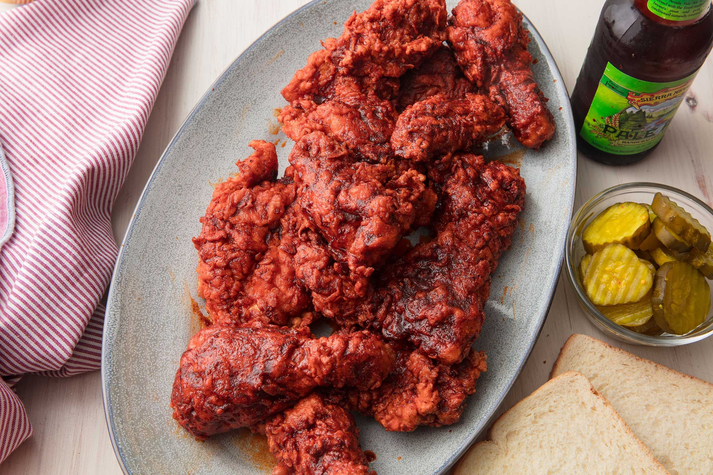

Nashville-Style Hot Chicken

Descriptions
If you like classic fried chicken and are a fan of all things spicy, you are going to love this Nashville Hot Chicken!
Each piece of crispy, crunchy, and juicy fried chicken is brushed with spicy oil, so its bright red, crisp, and spicy hot. For a milder heat, drecrease the cayenne pepper in your hot oil Start at 1 tablespoon, and increase to your liking.
Ingredients
For 4 servings
Spice Mix
- 2 tablespoons cayenne pepper
- 2 tablespoons paprika
- 1 tablespoon garlic powder
- 1 tablespoon mustard powder
- 1 tablespoon black pepper
- 1 tablespoon onion powder
Chicken
- 4 bone-in, skin-on chicken thighs
- 4 chicken drumsticks
- 1 tablespoon salt
Spicy Oil
- 2 teaspoons light brown sugar
- 1/2 cup canola oil
Batter
- 2 cups buttermilk
- 2 tablespoons louisana hot sauce
- 2 cups flour
- oil, for frying
- white break to serve
- 8 dill pickles, cut into chips, to serve
Steps
- In a medium bowl, combine cayenne pepper, paprika,garlic powder, mustard powder, black pepper, and onion powder, and mix well.
- In a large bowl, place chicken and pat dry. Add 5 tablespoons of the spice mix and salt, and mix well, making sure all the chicken is fully coated. Cover with plastic wrap and rest in the fridge for at least 30 minutes, up to 24 hours.
- In a small saucepan, combine canola oil, 2 tablespoons of the spice mix(add more cayenne pepper in this step if you wish for a more heat), and brown sugar over medium heat and stir until the brown sugar dissolves, about 2-3 minutes. Set aside.
- In a medium-size bowl, add the buttermilk and hot sauce, and mix well.
- Dredge each piece of chicken into the flour, shaking off any excess. Dip them into the buttermilk mixture, then back into the flour.
- Heat oil to 325 degrees F (170 degrees C) in a deep pot
- Fry 3-4 chicken pieces at a time, making sure to not overcrowd the pot, for 10-12 minutes, until golden brown and crispy.
- Transfer the fried chicken to a wire rack over a baking sheet and brush with the spicy oil. Dust with the remaining spice mixture.
- Place on a slice of white bread and top with dill pickle.
- Enjoy!